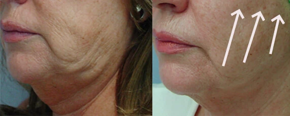
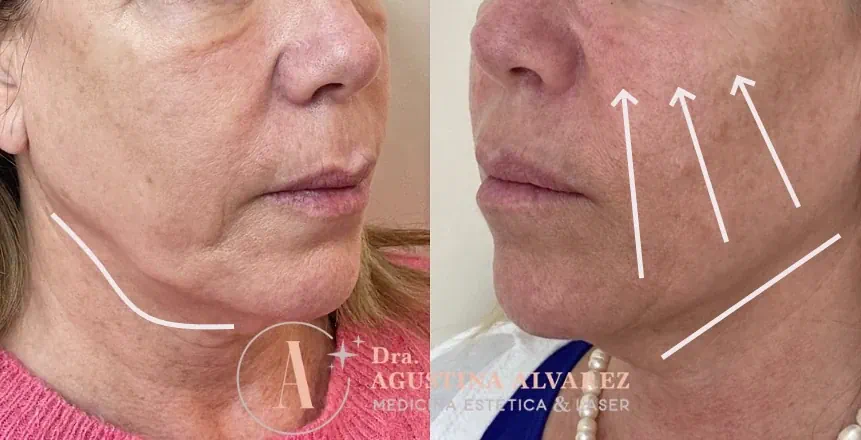

Facial Flaccidity
How to Treat It?
If you are interested in us helping you with this topic:
Book Your Initial Consultation Now!If you are interested in us helping you with this topic:
Book Your Initial Consultation Now!Facial flaccidity is one of the first visible signs of aging that affects skin firmness, especially in areas like the eye contour, cheeks, neck, and jawline. This condition occurs when collagen and elastin in the skin decrease, leading to loss of firmness and elasticity. At our Aesthetic Center, we have a wide variety of treatments to combat facial flaccidity and restore a rejuvenated and firm appearance.
At our Aesthetic Center, we offer different treatments to improve facial flaccidity without surgery, providing natural and long-lasting results. Some of the most notable are:

Yes, facial flaccidity tends to worsen over the years if not treated properly. Skin continues to lose elasticity and firmness, accentuating the sagging of facial features. Treatments like Radiesse or radiofrequency with Accent Prime are key to preventing further deterioration and improving skin appearance in a sustained way.
The results of treatments for facial flaccidity vary according to the method used and the individual characteristics of each patient. However, in general, you can expect a visible improvement in firmness and facial contour. Treatments like Sculptra and Radiesse offer progressive and long-lasting results, while Botox and hyaluronic acid fillers provide immediate effects. At our Aesthetic Center, we design a personalized plan for each patient to obtain the best possible results.
